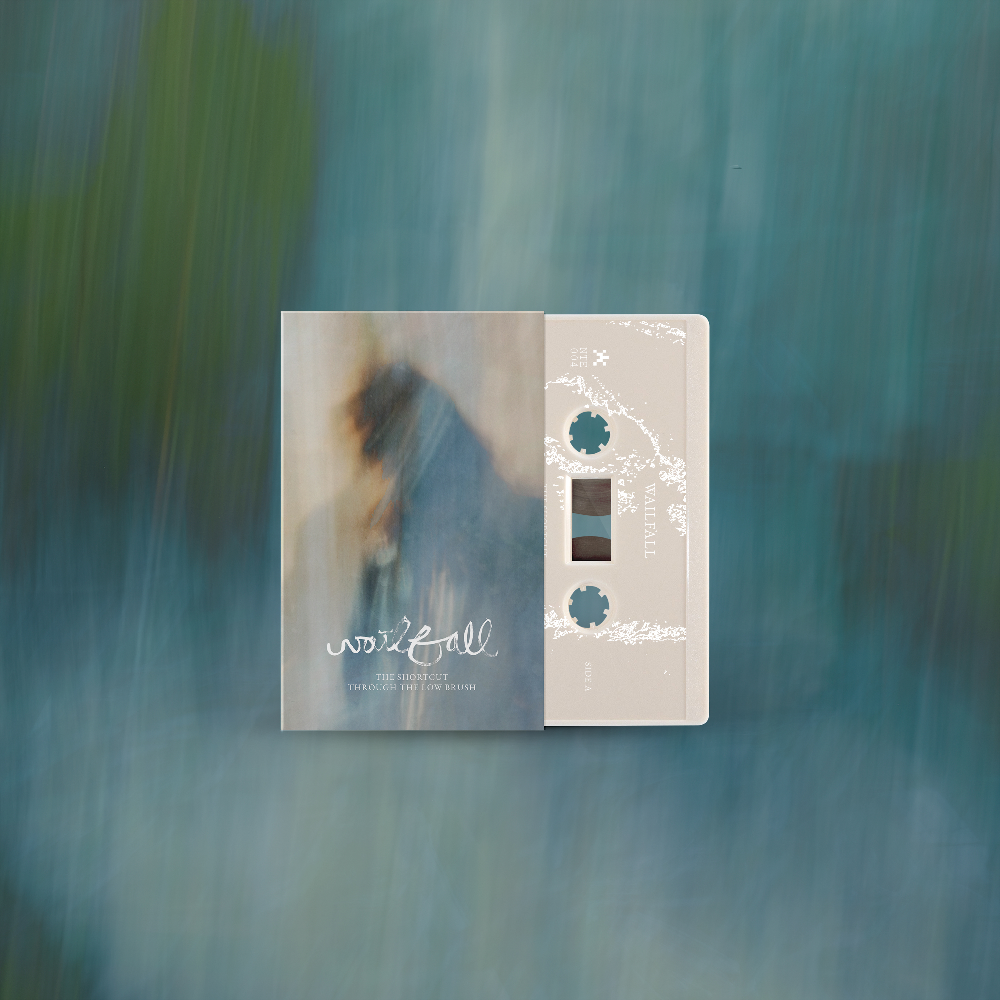

NTE-004: Wailfall – The Shortcut Through the Low Brush

Listen
Purchase
A Note from Wailfall
This record is a collection of ambient demos, revisited after a number of years. Some were vague ideas, some were half-finished recordings worked on with my friends that never quite found their way into something complete.
Rather than trying to force these demos into something they were never intended to be, I wanted to give them room to exist as they were. To revisit them with a little distance, find the things that still resonated with me, and allow them to take on a different shape and tone. In some ways, the project became less about finishing old ideas and more about finding a home for them.
There is something interesting about returning to things you made years ago. You hear traces of who you were at the time, alongside things you might not have recognized or appreciated then. It kind of feels like reading an old journal entry, opening up an old sketchbook, or flipping through a family photo album. These recordings feel like little artifacts of different moments of my life over the last several years.
Pressing Details
Limited-edition cassette in Maltese cross fold-out packaging. Release date .